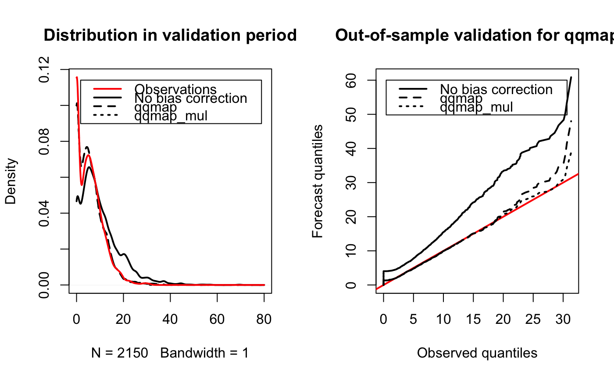

Computes bias correction with quantile mapping (i.e. additive
quantile correction). A short-hand for multiplicative (qqmap_mul)
quantile mapping is also provided. Furthermore, a quantile mapping approach
in which the algorithm moves on in jumps rather than sequantially along lead
times is provided via fastqqmap and fastqqmap_mul,
respectively.
qqmap(fcst, obs, fcst.out = fcst, prob = seq(0.01, 0.99, 0.01), window = min(nrow(fcst), 31), jump = 1, multiplicative = FALSE, lower.bound = NULL, anomalies = FALSE, debias = FALSE, smoothobs = TRUE, smooth = smoothobs, span = min(91/nrow(fcst), 1), type = 8, ...) iqqmap(fcst, obs, fcst.out = fcst, prob = prob, multiplicative = FALSE, type = 8) qqmap_mul(..., multiplicative = TRUE) fastqqmap(fcst, window = min(nrow(fcst), 31), jump = min(window, 11), ...) fastqqmap_mul(fcst, window = min(nrow(fcst), 31), jump = min(window, 11), multiplicative = TRUE, ...) qqmap_debias(..., debias = TRUE)
| fcst | n x m x k array of n lead times, m forecasts, of k ensemble members |
|---|---|
| obs | n x m matrix of veryfing observations |
| fcst.out | array of forecast values to which bias correction should be
applied (defaults to |
| prob | quantiles for which quantile correction is estimated |
| window | width of window to be used for quantile mapping |
| jump | minimum number of days the moving quantile window jumps (see below) |
| multiplicative | logical, is quantile correction to be applied multiplicatively? |
| lower.bound | is used to truncate output if set (e.g. to zero for precipitation) |
| anomalies | logical, should quantile mapping be applied to forecast and observed anomalies (from forecast ensemble mean) only (see below)? |
| debias | logical, should quantile mapping be applied to anomalies from smoothed climatology (only additive)? |
| smoothobs | logical, should observation climatology be smoothed? |
| smooth | logical, should forecast climatology be smoothed? |
| span | the smoothing bandwidth (see |
| type | an integer between 1 and 9 selecting one of the nine quantile
algorithms detailed below to be used (see |
| ... | additional arguments for compatibility with other bias correction methods |
The quantile mapping algorithm estimates quantile correction factors
for q quantiles. For each forecast value in fcst.out, the
percentile within which the value falls in the distribution of input
forecasts fcst is determined and the corresponding quantile
correction applied. For multiplicative quantile mapping
(multiplicative = TRUE), the bias corrected forecast
(fcst.out) is divided by the ratio of forecast to observed quantiles,
whereas for additive quantile mapping multiplicative = FALSE (the
default), the difference between the forecast and observed quantiles are
subtracted from fcst.out.
The quantile mapping is lead time dependent, parameter window is used
to select the number of lead times on either side of the lead time that is
to be corrected to be included in the quantile estimation. For the begining
and end of the series, the lead-time interval is kept constant, so that to
estimate the quantile correction for the first lead time, the first
window lead times are used. If exact = FALSE, the lead time
dependent quantiles for the forecast are directly estimated from single lead
times without the surrounding window lead times. This is a quick and
dirty fix to speed up processing.
If debias = TRUE, the quantile correction is
applied to the anomalies from the long-term lead-time dependent climatology
(from the observations and forecasts respectively). The quantile corrected
forecast anomalies are finally added to the observed climatology to produce
an approximately unbiased, quantile corrected forecast. If smoothobs =
TRUE and/or smooth = TRUE, the lead-time dependent climatology of
the observations and/or forecasts are smoothed using a
loess smoother with bandwidth span. Whether
there are use-cases for which such an a priori de-biasing is
beneficial is not obvious and needs further exploration.
If anomalies is set, forecast and observed
anomalies are computed with reference to the forecast ensemble mean (the
signal) and the quantile correction is only applied to the anomalies with
the signal being left uncorrected. It is speculated that such an approach
may more explicitly reflect the skill / calibration relationship of
forecasts (i.e. the option has been implemented without theoretical
underpinning nor an existing use-case that illustrates the benefits of
applying quantile corrections as described in this paragraph ;-).
## initialise forcast observation pairs nens <- 51 signal <- outer(sin(seq(0,4,length=215)), sort(rnorm(30, sd=0.2)), '+') + 2 fcst <- list(raw=array(rgamma(length(signal)*nens, shape=2, scale=2), c(dim(signal), nens)) * c(signal) * (runif(length(signal)*nens) > 0.1)) obs <- array(rgamma(length(signal), shape=3, scale=1), dim(signal)) * signal * (runif(length(signal)) > 0.3) fcst$qqmap <- biascorrection:::qqmap(fcst$raw[,1:20,], obs[,1:20], fcst.out=fcst$raw, lower.bound=0) fcst$qqmap_mul <- biascorrection:::qqmap_mul(fcst$raw[,1:20,], obs[,1:20], fcst.out=fcst$raw, lower.bound=0) oprob <- (seq(obs[,21:30]) - 1/3) / (length(obs[,21:30]) + 1/3) oldpar <- par(no.readonly=TRUE) par(mfrow=c(1,2)) plot(density(obs[,21:30], from=0, to=80, bw=1), type='n', main='Distribution in validation period') for (i in 1:length(fcst)) lines(density(fcst[[i]][,21:30,1], from=0, to=80, bw=1), lwd=2, lty=i) lines(density(obs[,21:30], from=0, to=80, bw=1), lwd=2, col=2) legend('topright', c('Observations', 'No bias correction', names(fcst)[-1]), lwd=2, col=c(2,rep(1, length(fcst))), lty=c(1,seq(fcst)), inset=0.05) plot(quantile(obs[,21:30], type=8, oprob), quantile(fcst[[1]][,21:30,], type=8, oprob), type='l', lwd=2, xlab='Observed quantiles', ylab='Forecast quantiles', main='Out-of-sample validation for qqmap')for (i in 2:length(fcst)) lines(quantile(obs[,21:30], type=8, oprob), quantile(fcst[[i]][,21:30,], type=8, oprob), lwd=2, lty=i)par(oldpar)